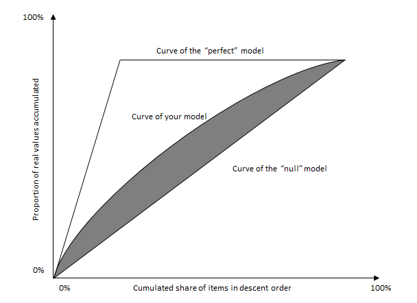
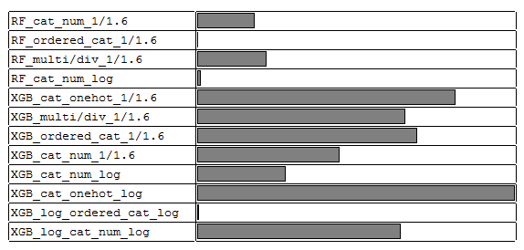

I'd say I did not bad (LB top25%) in this game and still have long way to go. Since for what I've done there are pros and cons, it's time to make a summing-up.
Liberty Mutual Insurance provides wide range of insurance products. For its home insurance service, newly insured properties need further home inspection to make sure the property is one Liberty Mutual wants to insure. Inspection includes key attributes of the property like the foundation, roof, windows and siding.
In this competition, we are given a training set, with each row representing a property's attributes and corresponding historical hazard scores (or damege scores). Then we are required to predict hazard given new property's attributes.
Normalized Gini
This game uses normalized Gini coefficient as evaluation (check this for definition). The definition is a bit vague, and I want to make it clear as follows.
- First, only the order of the prediction matters. After submission, predictions are ordered from largest to smallest. Then we only focus on the corresponding real values and calculate: for the top x% of predictions, what percent of real values are cumulated. A Lorentz curve is drawn then.
- Second, there is a "perfect" curve, your model's curve and a "null" model's curve. Perfect curve assumes the order of predictions are all correct. A null model means a model which generates random predictions. So ideally it will generate a diagonal Lorentz curve. The area between your curve and the diagonal curve is the Gini coefficient, then devided by the perfect model's Gini coefficient gets the normalized one. Python code is given in the end.

My Solution
Features
This competition's features consist of numeric ones and categorical ones. Since they are all anonymous, explicit feature engineering due to their meanings seems not possible.
-
Feature Transformation: I found auto encoding and one-hot encoding the categorical variables both useful for non-linear models. One-hot encoding the entire features improves linear models' performance. The number order of auto encoding is a bit tricky: sorting categorical feature by appearance and then auto encoding gives worse performance, compared to Sklearn's default auto encoder. I also did output transformation which improves performance evidently: the output distribution is skewed with a left peak, so I did a
1/pexponential transformation with 5-fold CV to find the bestp. Logarithm transformation was also added to the models later. -
Feature Extraction: I tried to multiply/devide between numeric features and select informative combinations.
-
Feature Selection: I did a backward selection. First I used random forest and XGBoost to generate feature importance, used Randomized Lasso to select non-zero coefficient features and calculated each feature's Normalized Mutual Information to the response. Then "suspicious" features were highlighted. I ran the model, tested one "suspicious" feature at a time, and deleted it from the entire feature set if it diminished the performance. Five noisy features were dropped in the end.
Models
-
XGBoost: I had 8 xgboost models, with parameters manually tuned and using early stopping, running on different version of feature set. They worked very well in this competition.
-
Forests: I built and select 4 tuned random forests. Extra trees performed a bit worse so were not included in the final ensemble.
-
Linear Models: Lasso and Ridge worked best among all the linear models I tried: Linear Regression with or without regularization, Linear SVR, etc. One-hot transformation was very suitable for these models to improve performance. But they did not work at all in the final ensemble.
-
Other Ideas: I tried neural network and kNN but they did not work well. I tried to turn this problem into a
1ornon-1classification problem since1took a large proportion but ended up with poor accuracy. I tried meta bagging method I used in Otto's Challenge but in vain. For about one week I stuck with no LB improvement and finally I came up with the output transformation which helped a small improvement on LB.
Ensemble
I used weighted averaging to ensemble different models. The tool I took is Scipy's COBYLA to combine 5-fold holdout predictions from each model. I find it's handy to keep k-fold's index because new models can be easily thrown into the ensemble afterwards. The final weights of selected models are as follows.

Lesson Learnt
I read some of the top LB player's solutions after this competition. I would have achieve better results if I adopted one of these good ideas. Anyway, the learning goes on. The following two methods are found to be quite useful in this game and new to me.
Poisson Regression
The responses are positive integers starting from 1. Thus treating y as cout data and using a Poisson Regression seem intuitive. It performs quite well, especially by combining it with XGBoost. The score comparison is (the greater the better):
- XGBoost using
reg:logistic:0.37618 - XGBoost using
count:poisson:0.37921
I made it clear how Poisson Regression works after reading some references given in the end of the article. It can be understood using the theory of the Exponential Family and Generalized Linear Models. The Poisson distribution parameterized by $\lambda$ is:
$$p(y;\lambda ) = \frac{ { {e^{ - \lambda } } {\lambda ^y} } } { {y!} }$$
Rewrite the distribution as:
$$p(y;\lambda ) = \frac{ { {e^{ - \lambda } } {\lambda ^y} } } { {y!} } = \frac{1} {y!}\exp (y\log\lambda - \lambda )$$
Comparing with the standard form of the exponential family we can get:
$$b(y) = \frac {1} { {y!} } \ \eta = \log \lambda \ T(y) = y \ a(\eta ) = {e^\eta }$$
Using Generalized Linear Model's constructing rule, the hyposis of Poisson Regression can be written as follows (the first equality uses GLM's second assumption and the third equality uses the fact Poisson distribution's mean is $\lambda$)
$${h_\theta }(x) = E[T(y)\left| x \right.] = E[y\left| x \right.] = \lambda = \exp \eta = \exp ({\theta ^T}x)$$
So this model outputs variable distribution's expectation. The loss funtion of an example $({x_i},{y_i})$ can be derived from its negative log-likelihood. The log-likelihood is defined as:
$$logp({y_i}\left| { {x_i};} \right.\theta ) = \log(\frac{1}{ { {y_i}!} }\exp ({y_i} \log {h_\theta }({x_i}) - {h_\theta }({x_i}))) \ = {y_i} \log {h_\theta }({x_i}) - {h_\theta }({x_i}) - \log({y_i}!) $$
Drop the last part, and write the loss function as:
$$L({x_i},{y_i}) = {h_\theta}({x_i}) - {y_i}\log{h_\theta}({x_i})$$
$\theta $ can be estimated using stochastic gradient descent. I failed to find the loss function used in XGB for Poisson, but I guess it might be close to this one:
$$L({y_i},f({x_i})) = \exp (f({x_i})) - {y_i}f({x_i})$$
Stacked Generalization (aka Stacking)
In Otto's Challenge I mentioned a modified version of stacking (ie. Meta Bagging) but it did not perform well in this game (only 0.3869 on private LB, which is not a good score for a complex ensemble). It's a pity I did not try the "original" stacking or stacked generalization, which worked very well here and also works well for many other data science competitions.
For stacking with 2 levels, predictions from the 1st level are treated as meta-features. Then they are combined by a 2nd level estimator to produce final prediction. This is the basic idea behind stacking. The process of a 5-fold 2-level stacking is as follows:
- Hyperparameter tuning and model selection for 1st-level models.
- Split training set into 5 folds. For each 1st-level model selected and tuned from above:
- Train on each combination of 4 folds and make predictions on the holdout fold. Then combine the five holdout predictions together.
- Train on the entire training set and predict on the testing set.
- Tune, select and train 2nd-level models on the predictions from the 1st level.
We can see from above that each level 1 model needs training and prediction for 6 times. I usually saw players used stacking with 3-levels: they often choose non-linear models like XGB or NN for level 2 and linear models or weighted averaging methods for level 3. In that case, the 2nd-level models also need to do k+1 times training and prediction to generate training and testing data for the 3rd level. In my limited experience I have never seen stacking with more than 3 levels, probably because of computational complication and severe information leak.
Some winning cases using stacking will be given in the end.
Code
Code for gini and code for my solution can be found in my GitHub repository.
Reference
- Triskelion's Kaggle Ensembling Guide: useful to know different ensembling methods and tell difference between stacking and blending.
- 1st PLACE - WINNER SOLUTION - Gilberto Titericz & Stanislav Semenov: great ensemble using 3-level stacking for Otto's challenge.
- KDD CUP 2015 winner solution: Intercontinental Ensemble: another great ensemble using 3-level stacking.
- Stanford CS229 - Generalized Linear Models